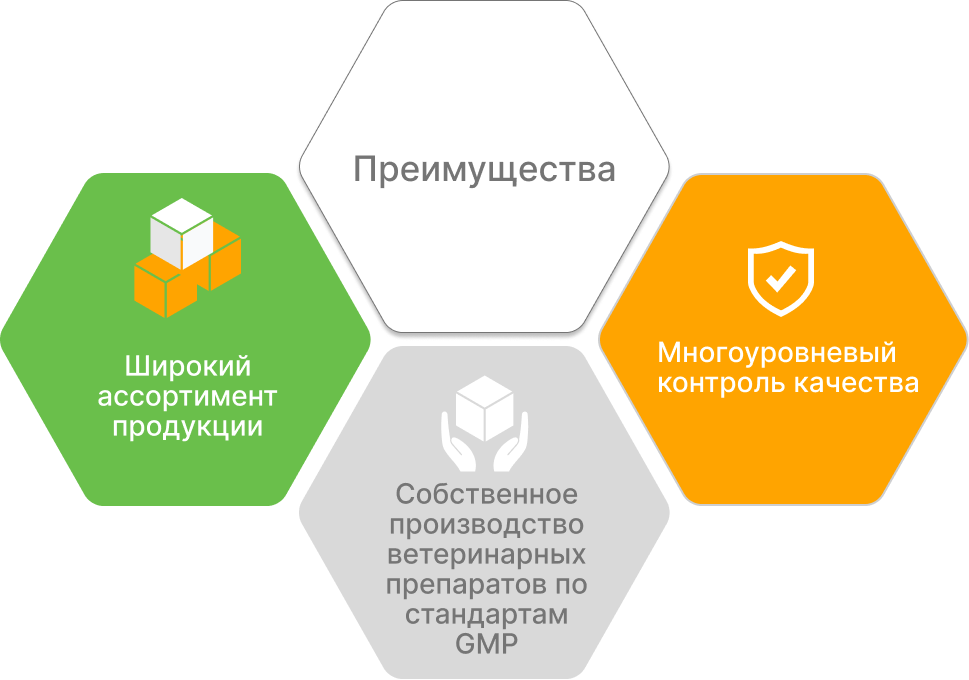
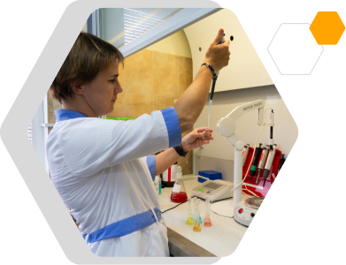

Собственное производство ветеринарных препаратов по стандартам GMP
Мы воплощаем миссию заботы о здоровье животных через создание продукции, отвечающей самым высоким стандартам качества и безопасности
Собственное производство — это сердце компании Агробиопром. Мы гордимся тем, что каждый препарат создается на наших мощностях с использованием уникальных инновационных и классических технологий, на основе лучших мировых фармацевтических практик.
Наш завод оснащен современным оборудованием и соответствует всем требованиям производственной безопасности. Мы создали и постоянно совершенствуем систему менеджмента качества, обеспечивающую бесперебойное ведение производственных процессов и прозрачность жизненного цикла каждого продукта, разрабатываем детальные инструкции по всем производственным операциям, проводим валидацию технологических процессов и аналитических методов, обучаем персонал требованиям GMP, тщательно следим за их выполнением, собираем, анализируем и храним в течение установленного срока данные о каждой выпущенной серии продукции от момента поступления сырья на предприятие до утилизации.
Мы проводим контроль качества продукции на каждом этапе производственного процесса на базе собственной химико-аналитической лаборатории. Сплоченная команда компании Агробиопром включает сотрудников самых разных профессий: квалифицированных ветеринаров, технологов, исследователей-разработчиков, химиков-аналитиков, IT-специалистов, менеджеров по качеству и маркетингу, коучей, переводчиков, дизайнеров. Мы стремимся двигаться в ногу со временем, расширяем контакты, организуем видеоконференции, форумы и семинары, посещаем профессиональные выставки, консультируем, обучаем и учимся каждый день, обмениваемся опытом, создаем на его основе новые совершенные продукты, контролируем, чтобы дистрибьюторы и потребители имели полную информацию о наших продуктах, не нарушали правила хранения, транспортировки и правильно их использовали. Все это позволяет нам проявлять профессиональную заботу о главных клиентах — животных.
Мы гарантируем высокое качество и безопасность собственных продуктов.Наши преимущества

Широкий ассортимент продукции
- Более 170 наименований продукции для лечения, профилактики заболеваний животных и ухода за ними
- Более 40 специализированных препаратов от всех известных заболеваний пчёл
- Собственные уникальные разработки в области технологии ветеринарных препаратов
Собственная сеть современных складских комплексов
Зона хранения включает три основных склада:
- cклады готовой продукции
- cклады сырья
- cклады упаковочных и вспомогательных материалов
Общая площадь складских помещений превышает 1500 кв.м. Все производственные помещения оснащены автоматизированными системами контроля доступа, противопожарной защиты и климат-контроля, что обеспечивает оптимальные условия хранения продукции. На складах ведется посерийный учет сырья и материалов в электронном виде, который дублируется на бумажном носителе.
Многоуровневый контроль качества
Современное оборудование и технологии позволяют осуществлять контроль качества на каждом этапе производства. Технологический регламент и технологическая карта производства обеспечивают соблюдение всех санитарных норм производства и производственных стандартов.
Три этапа и основные процедуры контроля качества, применяемые на нашем производстве:

Входной контроль сырья и материалов
- Проверка сопроводительной документации, отбор проб и лабораторные испытания каждой партии сырья и вспомогательных материалов на соответствие требованиям качества.
- При выявлении брака — перемещение партии в зону брака и возврат поставщику.
- Выдача разрешения на размещение сырья и материалов надлежащего качества в зоне хранения.
Входной контроль сырья и материалов
- Проверка сопроводительной документации, отбор проб и лабораторные испытания каждой партии сырья и вспомогательных материалов на соответствие требованиям качества.
- При выявлении брака — перемещение партии в зону брака и возврат поставщику.
- Выдача разрешения на размещение сырья и материалов надлежащего качества в зоне хранения.
Входной контроль сырья и материалов
- Проверка сопроводительной документации, отбор проб и лабораторные испытания каждой партии сырья и вспомогательных материалов на соответствие требованиям качества.
- При выявлении брака — перемещение партии в зону брака и возврат поставщику.
- Выдача разрешения на размещение сырья и материалов надлежащего качества в зоне хранения.
Ветеринарные лекарственные препараты, выпускаемые компанией Агробиопром, проходят процедуру государственной регистрации, корма для животных и продукция некоторых других видов – процедуру подтверждения соответствия в порядке, установленном законодательством Российской Федерации. Продукты компании Агробиопром — это сочетание современных технологий, качества, соответствующего стандартам GMP, безопасности и доступной цены.
Доверьтесь нашему опыту и профессионализму — вместе мы создадим оптимальные условия для долгой и счастливой жизни ваших животных.
ваша забота наша ответственность